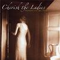

Celtic Lyrics Corner > Artists & Groups > Cherish The Ladies > Woman Of The House
|  |
Woman Of The House
(2005) |
| Tracks : |
1. The Jolly Seven/The Rascal On The Haystack/Bonkers In Yonkers
2. Sweet Thames Flow Softly 3. Carolan's Favorite Jig/The Rakes Of Cashel/Highland March In Oscar & Malvina 4. Bogie's Bonnie Belle 5. Woman Of The House Medley: The Fairy Queen/The Gooseberry Bush/Paddy Kelly's/Woman Of The House 6. The Hills Of New Zealand 7. Betsy Belle And Mary Gray 8. Fair And Tender Ladies 9. Paddy O' Snap/Robin Kellegher/The Cove Of Cork 10. The Green Fields Of Canada 11. The Old Maids OF Galway/The Sunny Banks/The Flooded Road To Glenties/Free & Easy |